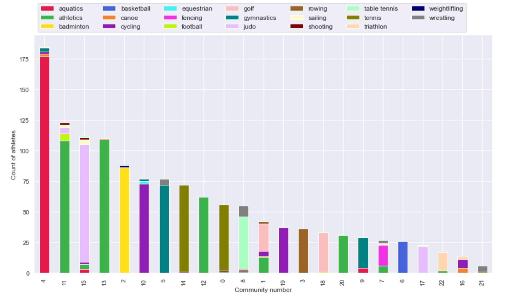
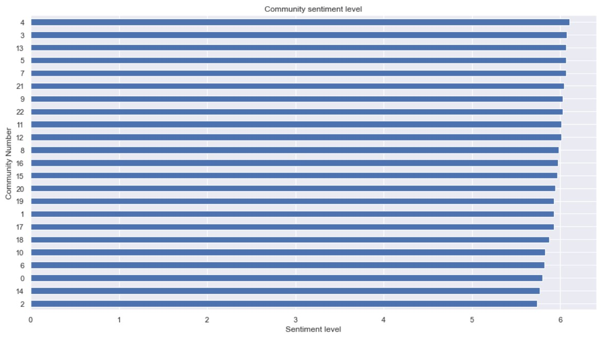
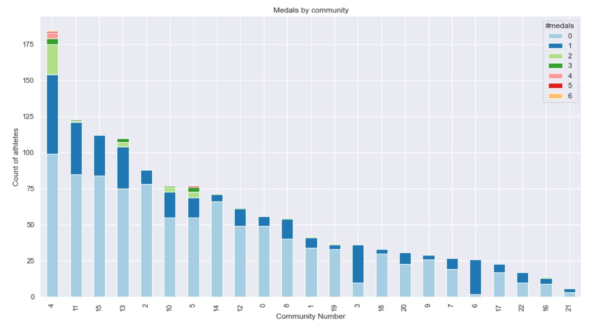
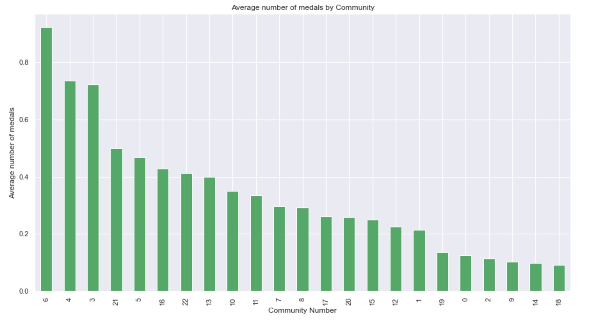
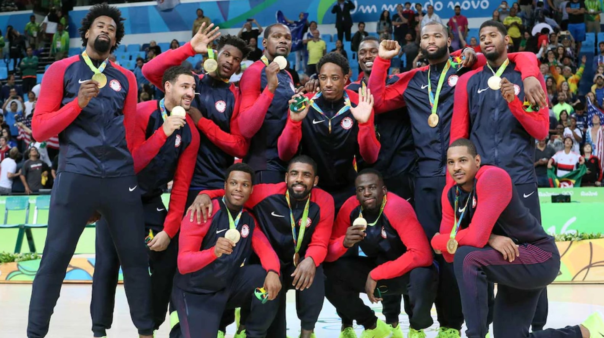

The Rio Olympics
2016 Athletes network
At the Olympics 2016 in Rio, [11,238] athletes participated.
The following visualization shows 5,318 of the athletes.

This huge graph shows many the athletes participating in the Olympics 2016.
However, it becomes clear that many of the athletes do not have any links to any other athlete. This can be due to many athletes only have very little information
on their Wikipedia page, and dont link to any other athlete competing at the Olympics. Many of the individual sports
are also not having any links to other atletes, and are therefore not a part of the connected component.
Take a look at this cool sabre fencer, [Eileen Grench].
She might be really interesting, however she is neither linking to anyone, or anyone linking to her.
She will have to be removed from the graph, since Network science only makes sense if there is a network (links between nodes).
The main reason for an athlete having many links on Wikipedia is his/hers level of famousness. If an athlete is big and famous,
the Wikipedia text is long, the references are many - both in and out of the athletes Wikipedia page.
This leads to the fact that further analysis is mostly analyzing the famous athletes participation in the Olympic Games in Rio.
Connected Athlete Network
The graph now shows 1,328 of the athletes and their links between each other. This is called a
subgraph of the big athletes graph we saw above.
These 1328 athletes are in fact the Giant component found in the olympic athletes network.
This means, that these athletes are all somehow linking to each other, either directly or through someone, and
the network is the biggest connected network in the Olympic Games 2016 (according to Wikipedia).
Even though these athletes are all connected somehow, 1,328 people are for sure not "friends". There must be
smaller groups of athletes, that have more in common with each other than the rest of the athletes.
We will try and answer this question by looking into the communities of the Giant Component.
Quickly we can identify some of the commnities also identified from the big Olympic Network.
However, the communities are now much easier to see and differentiate between.
This network is called a social network, where we can, by just looking at the network, spot some communities. It might be obvious that the group of athletes that
perform the same sport are in a community together, or the athletes that have often been playing against each other, are in communities together.
To detect the athletes interactive community network, click on the example below and try play with the network yourself.
Maybe you can find out information about community 0 and 14 - who are these athletes and why are they so densly connected?:
Once again quite a cool graph ♥
Cliques within the communities
Did you find out which athletes community 0 and 14 mainly contain?
In Network science there are something called strong and weak communities. This is defined by how many cliques the community has.
A clique in a network corresponds to a complete (fully connected) subgraph, where all the nodes are connected.
If a community is having many cliques and thereby makes every node within the community have more links to each other than to other nodes outside the community,
it is defined as a strong community. If the opposite occurs, the community is a weak community.
Looking at the connected athletes' network, community 0 and 14 are clearly strong communities, only determined by the density of the plottet community.
Investigating the number of cliques inside the two communities also revieal that this is true. The biggest clique in all of the olympic network is
found in community 0.
This clique are all famous female tennis players. Everyone of these tennis players are linking to all the other tennis players in the clique, which is
called fully connected. Try visit [Serena Williams] Wikipedia page, and see if you can find
the 16 female tennis players that her page links to.
Let's detect the communities even more, and maybe spot which communities that isolates athletes from other sports, and which communitites that might connect athletes across sports.
Wordcloud for atletes communities
Once again, all words from each athletes' Wikipedia page are collected and distributed into communities and the importance of each word is calculated.
Word clouds for the first four communities are visualized below:
Can you recognize the Olympic sports icons for each community?
The word cloud for Community 0 clearly determine the theme of the community to be Tennis.
This can be seen by the important words such as wta, slam, wimbledon etc.
Many top tennis athletes are also mentined, as
[Venus Williams] and
[Ana Ivanovic].
Looking at community 1, the word golf apear. Hence this community is very likely
containing many gold athletes.
In Community 2 the words bandminton and bwf (Badminton World Federation)
are counted as important and hence representative for the sport badminton.
Lastly, community 3's most important word is rower followed by scull
and glover, which is [Helen Glover],
the Rio 2016 gold medalist in rowing (together with her partner [Heather Stanning].
The above four communities are amongst the 23 communities, that were found
in the athletes network. Lets look at a bar chart, that show whether the hypothesis,
that the sport defines the community is true.
Are communities divided by their sport?
The following bar chart show how the different sports are represented in each community.

This bar chart confirm the hypothesis, that the communities are seperated by sports.
The largest community (community 4) are mostly containing aquatics (red),
whereas community 11, 13, 12,1, 29, 7 and 22 contain athletics (green).
This tells that athletics are more spread out into several communities, even when being the largest sport in the Olympics.
This amplifies that athletics contains many different disciplines
that not necessarily link to each other.
If comparing the interpretation of the word clouds for the athlete's community
with the above stacked bar chart it can be seen that community 0
indeed are dominated by tennis athletes.
Further community 1 is a more mixed community but still
most of the athletes are golf players.
Community 2 are dominated by badminton players and community 3 consists only of rowers.
The hypothesis is confirmed!
Evaluation of communities
From the above bar chart, it became clear that the athletes have their sport in common
within their community.
But what about the mood in each community? We have all heard the rumors that
some sports are collaborative an knowledge sharing, whereas other sports
are much more individual and competitive, which would very likely influence the happiness of the sport.
Would this be possible to investigate?
There are something called sentiment analysis. This is an analysis that takes
the given text and give each word an average sentiment value.
In the end, you can take the average sentiment value of the whole text, and determine its average sentiment.
Maybe this is possible with the communities? Let's read all the Wikipedia pages in each community and calculate the average sentiment.

The above plot shows the average sentiment for each community. Wikipedia does not differentiate much between the sentiment for each sports community.
Since Wikipedia is supposed to be neutral in its language, this was expected
[wiki].
What would then define the happiness of a community?
Number of medals won in each community
Athletes compete at the olympics for one reason - winning medals.
Below is shown a bar chart of the number of athletes in each community, and how many
medals they have won.

It can be seen that community 4 contains many athletes that have
won one or more medals. Community 4 are mainly aquatics where, as an example,
swimming gives the opportunity to win more than one medal.
[Michael Phelps] is an example
of this, since he won five medals at the Olympics in Rio.
Although this plot must be a great indicater of how happy each community is,
it is also not fair - of course community 4 as the biggest community wins the most medals.
What if we look at how many medals is won per athlete in each community?
Average number of medals in each community
Below is plottet the number of medals won per athelte in each community:

This bar chart show a clear win by community 6, that almost won one medal per athlete in the community.
That is impressive!
This community mainly consist of the basket ball players from USA.
Basket is a team sport, meaning that if a team wins, everybody gets a medal,
and it is therefore obvious that this sport will have a high average number
of medals.

Even though the basket ball players look a bit too cool for school, they are probably extreamly happy.
They just won Olympic Gold!!!
This page has guided you through the Network of the many famous Olympic athletes from the Olympic Games in Rio 2016.
You have learned about how athletes link to each other, and how some groups of athletes are more connected than other groups of athletes.
You have been enlightened that Network science is a great tool to analyze real-world networks.
Finally, you have hopefully gotten the understanding that a society with many individuals like
the athletes at the Olympic Games is in fact a connected network, where everyone knows someone.
Congrats you made it!
Your own Olympic journey is just about to start.